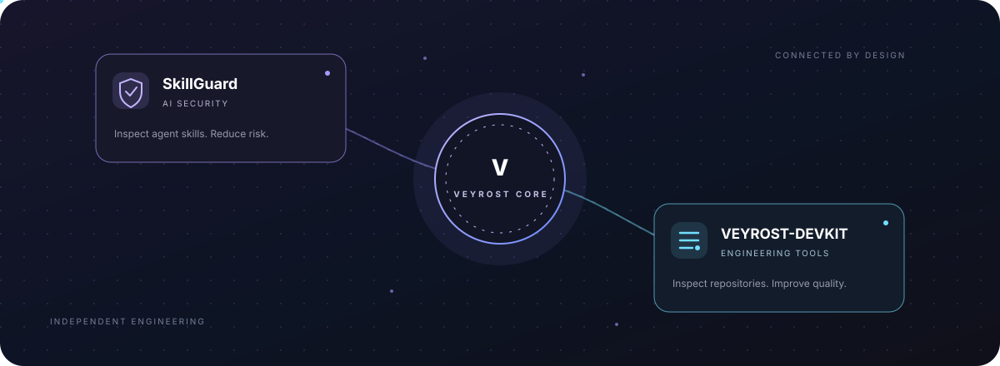

✳
Artificial Intelligence
Exploring intelligent systems, language models and applied AI concepts.
An independent technology initiative exploring ideas, building software and investigating the possibilities of emerging technologies.
A space for independent thinking, technical exploration and meaningful ideas.
VEYROST is an independent technology initiative focused on exploring, understanding and developing technology-driven ideas.
Its interests span artificial intelligence, software engineering, automation, computational systems and emerging technologies. The initiative brings experimentation and structured research together with a long-term engineering perspective.
VEYROST is currently in development. This website documents its direction, research, projects and progress.
“Understand the system. Challenge the limits. Build what matters.”
The mindset behind VEYROST.
The fields shaping the initiative's research and development direction.
Exploring intelligent systems, language models and applied AI concepts.
Designing software, applications and reliable technical architectures.
Investigating workflows, automation systems and practical integrations.
Studying technical problems through experimentation and critical analysis.
Exploring system architecture, performance and computational methods.
Following new technical possibilities and evaluating their potential.
A growing portfolio of experiments, software concepts and independent development.
VEYROST is establishing its technical foundation. Project descriptions, development milestones and verified releases will be published here as work progresses.
Two focused engineering products, connected through a shared commitment to practical, transparent technology.

A local-first security scanner for AI agent skills. It inspects skill instructions and bundled files for prompt injection, exposed secrets, hidden Unicode, risky execution patterns and permissions.
Explore SkillGuard ↗A local-first repository health and quality toolkit. It checks project hygiene, selected secret patterns, weighted health signals and creates explainable reports in multiple formats.
Explore VEYROST-DEVKIT ↗Independent repositories · Separate licenses and release histories · Connected by the VEYROST ecosystem
Selected writing and technical explorations published by VEYROST.
A method for examining generated answers through multiple verification stages.
Read article ↗ RESEARCH NOTE / 02Exploring structured self-critique and counterfactual reasoning in AI systems.
Read article ↗ RESEARCH NOTE / 03An exploration of contradiction-driven analysis and structured reasoning.
Read article ↗ RESEARCH NOTE / 04Examining adversarial perspectives as a tool for evaluating ideas.
Read article ↗An independent technology enthusiast and the founder of VEYROST, working at the intersection of software, artificial intelligence and technical experimentation.
For collaboration, technical discussion or questions about VEYROST, connect through the official project channels.
Visit VEYROST on GitHub ↗